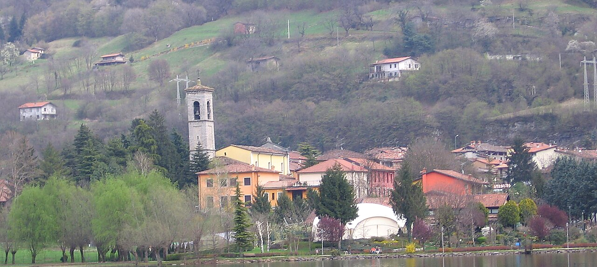
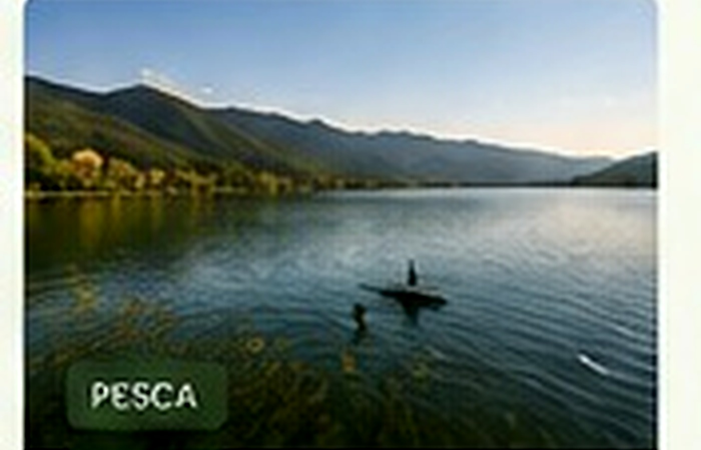

Il nucleo storico
Vie in pendenza, case addossate e portali in pietra raccontano la struttura più antica del borgo.
SCOPRI LA STORIA →Un borgo disposto sul versante occidentale della valle, dove il nucleo storico, le chiese e le antiche vie si aprono su vedute ampie del lago e delle montagne circostanti.
Ranzanico si sviluppa sulle pendici del monte Pizzetto e del monte Sparavera, in posizione elevata rispetto alla riva. Il nucleo storico di Ranzanico conserva l’impronta di un insediamento nato lungo antichi collegamenti tra la Val Seriana, Bianzano e il Lago di Endine.
La sua identità è legata soprattutto al rapporto tra borgo e paesaggio: salendo tra le vie si incontrano case in pietra, portali, testimonianze dell’antico sistema fortificato e scorci che abbracciano buona parte della valle. La visita può essere abbinata alle passeggiate sul Lago di Endine, agli altri borghi del Lago di Endine e alle guide dedicate alla natura.
Questa pagina raccoglie informazioni evergreen per capire cosa vedere a Ranzanico, scegliere dove fermarsi, organizzare un itinerario di un giorno sul Lago di Endine e proseguire alla scoperta di Spinone al Lago, Monasterolo del Castello ed Endine Gaiano.
Il paese non si visita come una sequenza di attrazioni isolate: il valore principale nasce dall’insieme di centro storico, arte e cultura a Ranzanico, tracce medievali e vedute sul Lago di Endine.
Vie in pendenza, case addossate e portali in pietra raccontano la struttura più antica del borgo.
SCOPRI LA STORIA →
La parrocchiale custodisce tele e arredi riconducibili a importanti artisti e botteghe bergamasche.
ARTE E CULTURA →
Un piccolo oratorio lungo la storica strada che collega il paese alla parte settentrionale del lago.
SCOPRI IL LUOGO →
Le strade alte e i margini del borgo offrono prospettive differenti sul Lago di Endine.
DOVE FARE FOTO →La posizione di Ranzanico, alla confluenza di percorsi che mettevano in comunicazione la Val Seriana con il Lago di Endine, contribuì alla sua importanza nel sistema difensivo della Val Cavallina. Nel centro si riconoscono ancora elementi che richiamano l’originaria organizzazione fortificata.
Camminare senza fretta è il modo migliore per osservare le differenze tra il nucleo antico, le zone rurali e le abitazioni affacciate verso il lago.
Ranzanico permette di alternare passeggiate nel borgo, collegamenti verso il lago e itinerari collinari e panoramici. Prima di partire è sempre opportuno verificare segnaletica, fondo, dislivello e condizioni del giorno.
Un percorso breve tra piazza, vie storiche, chiesa parrocchiale e punti panoramici.
Collegamenti in discesa verso la parte bassa del territorio, considerando poi il ritorno in salita.
Strade secondarie e antichi collegamenti permettono di ampliare la visita nella Val Cavallina.
Itinerari più impegnativi salgono verso i rilievi e richiedono preparazione adeguata.
La posizione rialzata rende Ranzanico un punto privilegiato per leggere il paesaggio del Lago di Endine: acqua, rive, pendii boscati e piccoli nuclei abitati si osservano come un unico sistema.
Le aree naturali di Ranzanico a monte del paese conservano un carattere rurale e forestale, mentre scendendo verso la strada di fondovalle il rapporto con il lago diventa più diretto. La visita richiede attenzione alla proprietà privata e rispetto dei sentieri.
All’interno sono segnalate opere di Palma il Giovane, Antonio Cifrondi e altri autori, oltre ad arredi legati alla scuola dei Fantoni.
San Bernardino costituisce una tappa raccolta lungo una delle direttrici storiche del paese.
Nel nucleo centrale restano elementi che richiamano la passata funzione fortificata del borgo.

La tradizione tessile e serica locale è raccontata anche attraverso raccolte e iniziative culturali del territorio.
La sosta a Ranzanico può essere abbinata alla cucina bergamasca della Val Cavallina, alla polenta, ai casoncelli, ai formaggi e alle proposte di ristoranti e agriturismi sul Lago di Endine.
Piatti sostanziosi e ricette legate alla tradizione delle valli.
Prodotti da cercare nelle attività locali e negli agriturismi.
Una presenza possibile nei menu, proposta secondo disponibilità e tradizioni dei locali.
Locali panoramici e indirizzi informali tra Ranzanico e i comuni vicini.

Ospitalità raccolta nel borgo e sul versante.

Soluzioni indipendenti per soggiorni più lunghi.
Il portale presenta le strutture come vetrina informativa e non gestisce disponibilità, pagamenti o prenotazioni.

Cucina locale, pesce e proposte contemporanee.

Ambienti informali per una sosta conviviale.
Orari e servizi possono cambiare: è consigliabile contattare direttamente ogni attività.
Inizia dal cuore del paese e osserva con calma vie, portali e scorci.
Prosegui verso la parrocchiale e l’oratorio di San Bernardino.
Dedica tempo ai punti di vista sul lago, soprattutto con luce favorevole.
Completa la giornata con una passeggiata sulle rive o in un borgo vicino.

Ranzanico si trova sul versante occidentale del Lago di Endine, nel cuore della Val Cavallina. In auto si raggiunge dalla viabilità provinciale della valle seguendo le indicazioni per il centro abitato.
Chi utilizza il trasporto pubblico deve verificare collegamenti e orari aggiornati prima della partenza. Nel borgo le strade possono essere strette e in pendenza: conviene utilizzare gli spazi di sosta consentiti e proseguire a piedi.
Consulta la guida completa su come arrivare al Lago di Endine →
Le viste più caratteristiche si aprono dal borgo e dalle strade alte. Alba, luce del mattino e tardo pomeriggio cambiano colori e profondità del paesaggio.
Scorci tra tetti, campanile e lago, con il paese in primo piano.
Vedute più ampie sulla forma del lago e sui versanti opposti.

Atmosfere limpide e colori più delicati nelle giornate serene.
Ombre lunghe e contrasti sul paesaggio della Val Cavallina.
Borgo, chiesa, belvedere e una visita a Ranzanico in un giorno.
Organizza un weekend a Ranzanico abbinando il borgo a Monasterolo, Spinone ed Endine Gaiano.
Consulta la guida Ranzanico con bambini e preferisci itinerari brevi, evitando tratti ripidi e ore più calde.
Riduci gli spostamenti a piedi e valorizza chiese, cucina e borghi vicini.
Risposte rapide per preparare una visita al borgo e al Lago di Endine.
Ranzanico si trova in Val Cavallina, in provincia di Bergamo, sul versante occidentale del Lago di Endine.
Il territorio comunale raggiunge il lago, mentre il nucleo storico è collocato più in alto sul versante e offre ampie vedute sull’acqua.
Puoi passeggiare nel centro storico di Ranzanico, visitare la parrocchiale di Santa Maria Assunta, osservare le tracce dell’antico borgo e raggiungere alcuni punti panoramici sul Lago di Endine.
Ranzanico è soprattutto un borgo panoramico: il rapporto tra abitato in quota, vie storiche e paesaggio del lago ne costituisce l’elemento distintivo.
Nel centro si possono compiere percorsi brevi, ma molte strade sono in pendenza. Per itinerari più lunghi consulta le passeggiate a Ranzanico e gli itinerari panoramici.
Sì. La guida Ranzanico con bambini raccoglie idee per visite brevi e spostamenti più semplici; le rive del lago offrono alternative più pianeggianti.
È necessario utilizzare esclusivamente gli spazi di sosta consentiti e rispettare la segnaletica locale. Consulta la guida dedicata ai parcheggi a Ranzanico.
Il borgo è visitabile durante tutto l’anno. Consulta quando visitare Ranzanico per scegliere il periodo più adatto a passeggiate, panorami e attività all’aperto.
Nel territorio sono presenti B&B, case vacanza e altre forme di ospitalità. Consulta la pagina dove dormire a Ranzanico e contatta direttamente la struttura.
Il paese e la zona del lago ospitano ristoranti, pizzerie e locali con cucina bergamasca, proposte di pesce e piatti contemporanei. Consulta dove mangiare a Ranzanico.
Per il centro storico possono bastare alcune ore; una giornata intera consente di aggiungere una passeggiata sul Lago di Endine, una sosta gastronomica e un borgo vicino.
No. Endine Sapori e Soggiorni è una guida informativa: le richieste vengono gestite direttamente dalle singole attività attraverso i loro contatti.
Una selezione di guide utili per conoscere il borgo, vivere il territorio e organizzare il soggiorno senza disperdere la navigazione in troppe pagine simili.
Approfondisci il patrimonio storico e culturale e scopri i luoghi più rappresentativi del borgo.
Cosa vedere Arte e culturaPercorsi, paesaggi e attività per esplorare Ranzanico e il versante occidentale del lago.
Passeggiate Natura Sport e attività Panorami e fotoLe pagine essenziali per scegliere dove fermarsi, mangiare e costruire una visita di più giorni.
Dove dormire Dove mangiare Weekend a Ranzanico Come arrivareConsigli pratici per famiglie e risposte ai dubbi più frequenti prima della visita.
Con bambini FAQ e consigli